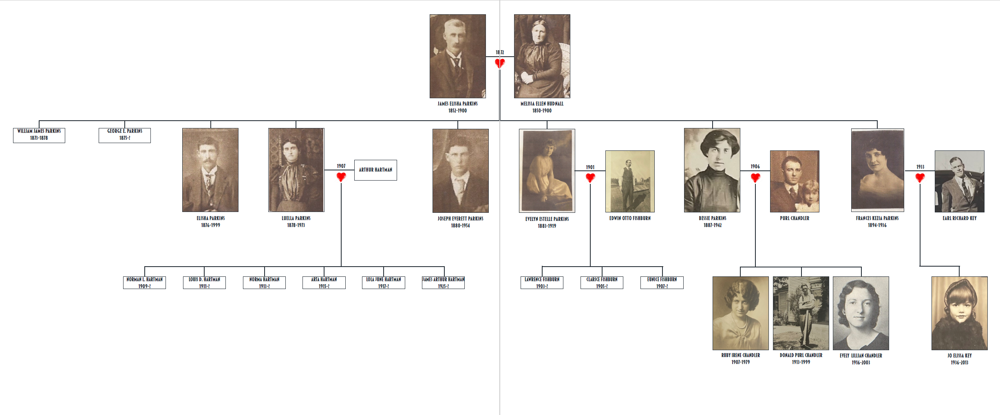

While this digital edition focuses on Kezia’s diary entries from 1911, I have provided key biographical information that helps frame the finalized text.
The last section, titled “Letter to JoElissa,” offers partial transcriptions of a from Evelyn Ehlers 1. It was written on September 30, 1997, and sent to my nana, , on October 3. For this particular transcription, I have made silent emendations to offer a clear finalized text, but with three exceptions:
First, there are a couple of passages that could be triggering. In inclined to overlook, **red asterisks enclose these instances. **
Second, if necessary, I’ve removed irrelevant text to save space and time. I’ve denoted this emendation by employing ellipses.
Third, the letter transcriptions in the final section are from one of two letters Evelyn sent to my Nana: the second was written on August 20, 2001. The 2001 letter is a version of the 1997 letter, with a few variants that proffer a similar yet further text in which may influence interpretation and/or add to the text’s meaning. I provide footnotes with text from the 2001 version; these particular footnotes have been denoted with enclosed brackets.
Before you begin, please take a moment to review the Parkins family tree below. Feel free to Zoom in on the image with mouse or fingers (if veiwing on your phone).
FRANCES KEZIA PARKINS
Kezia was born 7 March 1894 in Chapman, Nebraska. Throughout her young adult life, she traveled back and forth between Chapman, Nebraska and South Bend, Washington—visit the Sociohistorical Context page to learn more about South Bend, the geographic setting in which surrounds the finalized text.
South Bend, Washington seems a bit arbitrary considering the 1,600 mile distance from Nebraska. However, Kezia’s sister Evelyn Estelle Parkinsmoved there shortly after she had married Edwin Fishburn in 1901. It’s believed that Evelyn, 17, and Edwin 34, moved to South Bend because Evelyn “was afraid of the wind in Nebraska 2” (1). The lived in South Bend for approximately seven to eight years where they had Lawrence, Clarice, and Eunice before moving to Portland, Oregon. In Portland, learned she was pregnant, when Eunice was 12 or 13. **“Evelyn used a knitting needle to abort the baby and died of infection in 1919.**
During the years of 1923, Kezia lived with her mother, Melissa Hudnall Parkins, and two brothers Elisha and Joe in Chapman, Nebraska, along with who they hired to help with work around the property. The home they all lived in had four rooms, a large kitchen, two bedrooms, a living room, and two porches. Kezia shared a room with her mother, and Elisha and Joe shared the other bedroom. 3
It is believed that Phil wanted to marry Kezia, however, she wasn’t interested in him romantically. Inevitably, that did not sit well with Phil, and as a result Elisha mortgaged the farm to pay him off since Phil “wanted what he figured his pay for all the years he’d been the hired man” (1).
Before Kezia met Earl Key, she was became enamored with a man named . He had been teaching Kezia’s niece, Evelyn (Chandler) music lessons at Melissa’s, her grandmother, home. 4 Ed played for one of the local theatres and gave Evelyn piano lessons. Kezia “fell in love with Ed, but he didn’t want to get married, even though she took piano lessons at the conservatory so he’d like her better” (3). Even though a marriage didn’t manifest, her love for the piano and her skills proffered her a part-time job as a piano teacher herself.
In 1933, Richard Key on November 26. It is believed she married Earl “because he was a hard worked and quite handsome, and ‘couldn’t help’, the uncles thought” (1). They moved to a farm nearby and Kezia fixed up that home as well. However, they didn’t live there very long because they were back at her mother’s house, when Kezia fell ill and passed after giving birther to her first, and only, child: Jo Elissa Snyder (Key).
For reasons unknown, marriage to Purl Chandler ended in 1930. However, in 1935 Bessie remarried to Llyod Snyder. After Kezia passed, Earl found himself unable to raise a daughter alone. For that reason, Bessie and Lloyd adopted JoElissa. Unfortunately, when JoElissa was around the age of five, Bessie passed, leaving Lloyd to raise her. Lloyd was an incredible father, and true blessing for JoElissa.
The following excerpts are from a letter Evelyn’s diary that she transcribed in the letter (3-4) that give wonderful—nevertheless heartbreaking—details about Kezia in 1936:
LETTER TO JOELISSA
: Jo Elissa Key was born at 10:30 p.m. Aunt Kezia had eaten a big bunch of grapes that evening, and when she went into labor she wanted Mama 5 to stay with her, so Mama was present in the O.R. when they operated on her. **Mama said they piled her intestines on her chest, took you out, piled the intestines back in, any which way, sewed her help and took her to a room.** [Mama said that the only thing that kept her from fainting was her prayers]. 6
Sept. 20, 1936s: Ruby and Happ7 came, to tell us that Aunt K. was worse, so after O 8 and Happ got the chores done, we drove to . Aunt K. was pretty bad. We saw Jo. Sure cute. Left at 11, and got to Chapman about 11:30. The uncles 9 got up, and we talked till 12.
Sept. 22, 1936: … we all went back to see Aunt K. She was better, and know what she was saying….
Sept. 28, 1936: A card came from Mama saying that the doctors give no hope for Aunt K.
Sept. 23, 1936: The uncles and Mama came to say Aunt K. had nearly died, but was to get well, now. They stayed the night.
: Ruby and Uncle Joe came to say Aunt K. was very low, so we went to G. I. 10 to the hospital where they said she wouldn’t live through the night.
Oct. 13, 1936: We got to the hospital and found Aunt K. in a coma. She gradually got worse all day, and at 7 she died. We waited until the undertaker from Central City came, then O. took us back to the farm and he went home.
Oct. 15, 1936: They brought Aunt Kezia. She wore her and looked so nice. Services were at 2:00 … The neighbor ladies served supper that night at the farm where the was held.
1. Evelyn Ehlers: aka Evelyn Chandler, Bessie Parkins daughter; Kezia's niece. ↩
2. Tornadic winds, possibly? ↩
3. The home was later remodeled by Kezia, and she added a basement, a porch on the North which had a pump where she moved the kitchen range, and transitioned the kitchen to a dining room. ↩
4. At the time, Evelyn, Bessie, and Donald were all living on the farm with Kezia, Elisha, Jo, and Melissa. ↩
5. Bessie. ↩
6. 2001 Letter Transcription: Sept. 16, 1936, It was 10:30 p.m. and the day had been chilly where we lived between Thayer and Benedict, Nebraska. ↩
7. Ruby Irene Chandler: Bessie's daughter; Happ, Ruby's husband. ↩
8. Orville Ehlers, Evelyn's husband. ↩
9. Jo and Elisha. ↩
10. Grand Island hospital. ↩